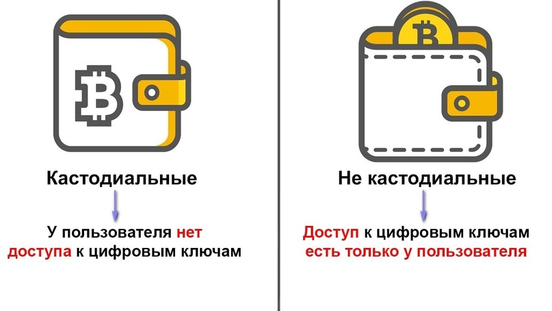

Как работают криптовалютные транзакции?
Как работают криптовалютные транзакции?Криптовалютные транзакции представляют собой процесс перевода цифровых активов между пользователями через блокчейн-сеть. Каждая транзакция записывается в блокчейн, что делает ее прозрачной и неизменяемой. Пошаговое объяснение процесса перевода средств
Понятие криптовалютных кошельков и их типовКриптовалютные кошельки — это программы или устройства для хранения и управления криптовалютами. Существуют два основных типа кошельков:
Обеспечение безопасности транзакцийДля обеспечения безопасности криптовалютных транзакций используются передовые криптографические методы, такие как цифровые подписи и хеширование. Эти технологии помогают защитить транзакции от взлома и подделки. Публичные и приватные ключиКаждый криптовалютный кошелек использует пару ключей: публичный и приватный. Публичный ключ — это адрес, на который можно отправлять средства, а приватный ключ — это секретный код, который используется для подписания транзакций и доступа к средствам. Хранение приватного ключа в секрете — основа безопасности. Мировая практика использования криптовалют в повседневной жизниВо многих странах криптовалюты уже стали частью повседневной жизни. Их используют для оплаты товаров и услуг, международных переводов, инвестиций и даже для благотворительных целей. Такие компании, как Tesla и PayPal, начали принимать Bitcoin в качестве платежного средства, а в некоторых странах, таких как Сальвадор, криптовалюты признаны законным платежным средством. |
 |